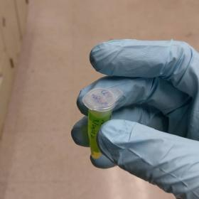

[
Research |
Writing |
Music |
Miscellaneous |
Gallery
]
Check out this silly random Stravinsky generator. (Sep 2019)
I wrote some book reviews of statistical mechanics textbooks. (Aug 2019)
Read my thoughts about the recent black hole image from the EHT collaboration (Apr 2019)
Research
Broadly, I am interested in the physics of the biochemical world—the thermodynamics of life, the quantum chemistry of vision, the energetic landscape of molecules, and more.
- In 2018, I studied the photochemistry of fluorescent proteins in the Boxer Lab in the Stanford Chem Department. Click here to learn more about this thrilling tale of crystals!
- In 2020, I will be studying some features of the loss landscapes of neural networks. Stay tuned for more...
[Back to top]
Writing
For some reason or another, I've written a good amount of things online now—mostly scientific things, but occasionally other stuff as well.
Lecture Notes
- Notes on Statistical Mechanics II (Physics 171)
- Detailed and elucidating. My classmates enjoyed these notes, and for a few weeks, these notes even acted as the de facto textbook for the class. Who would have thought?
- Notes on Fourier Analysis (EE 261)
- A side project. I eventually stopped writing these notes since the course materials were already very well-made, and I wasn't getting much out of writing them. But it was fun while it lasted.
- Notes on biochemistry
- An interesting experiment from the holiday season, where I bit off way more than I could chew. Turns out the best way to learn to swim is not to jump into the deep end of the pool.
[Back to top]
Blog Posts
- An Ordinary Extraordinary Day
-
- A day in the life of a college student, including a talk on the recent black hole imaging collaboration.
- On Intuition and Hessians
- Variations on a theme of diagonalizing second derivative matrices.
- Sculpture, Youtube, and Probability
- Random thoughts on random things.
- What's on my mind? March 2019
- A simmering stew of dynamical systems, high-dimensional spaces, Fourier Transforms, and a little complex analysis.
- Seven Perspectives on Free Energy
- In which the free energy is presented from seven different angles.
Interesting Final Papers
- Simulating an Ideal Gas to Verify Statistical Mechanics (pdf!)
- It's rather remarkable that the properties of a gas can arise from the "kinetic theory" of a bunch of billiard balls bouncing around. I wrote a little molecular dynamics engine to simulate such motion, and I got a hands-on experience of the tenets of statistical mechanics such as the Maxwell-Boltzmann velocity distribution. Here's the report I wrote for my computational physics class.
- The Evolution of General Relativity through the Lens of Curvature (pdf!)
- Nowadays, scientists talk about Einstein's magnificent theory using words such as "curvature" and "warping the fabric of spacetime" -- but a century ago when Einstein first came up with the theory, the language was completely different. At the end of my freshman year, I was curious whether the curvature meteaphor arose from scientists trying to explain the theory to laypeople. Here's the research-based argument I wrote for my writing and rhetoric class.
- Quantum Decoherence of a Particle on a Circle (pdf!)
- At her smallest level, Nature obeys the mystifying and conterintuitive laws of quantum mechanics, yet somehow, in our day-to-day lives, we see a completely different classical world filled with pocketwatches and saucers rather than wavefunctions and superpositions. The theory of decoherence explains how (aspects of) our familiar classical world emerges from the underlying quantum mechanics. In my final project for a grad quantum class, I explored the decoherence of spinning objects (since most other texts only talked about sliding objects!). Notice a common pattern, an obsession with emergence??
Other Writing
- Book Reviews of Statistical Mechanics Textbooks
- More opinionated than they ought to be.
- The Trek
- A short piece about a nightmarish trek through New York.
[Back to top]
Music
Outside of science, I take piano lessons with Dr. Weldy, and I play horn in the Stanford Collaborative Orchestra (SCOr). I also play jazz piano in a trio called Casual Business.
Here is a youtube link to an energetic recording of Gaubert's Trois Aquarelles with my fellow SCOr musicians Papa Odita-Honna (flute) and Michael Chung (cello).
[Back to top]
Miscellaneous
Here's a list of the books I'm currently reading.
Do you love javascript? I sure don't do.

Click on the graph to play with some applets about phase transitions! 
[Back to top]
Art Gallery

a box

a tube

a piano

a chair

a road

a forest
[Back to top]
This website was made from scratch with html, css, and javascript. Shocking in this day and age, I know! Icons downloaded from: 
Last updated on Dec 2, 2019